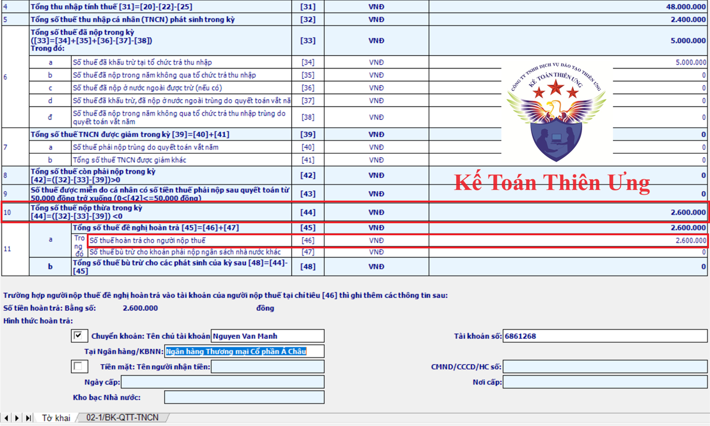
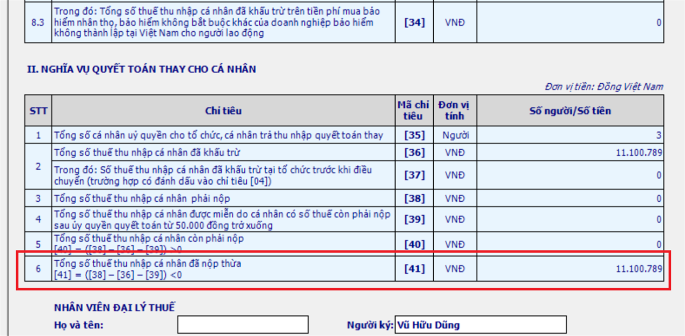

Quy định về hoàn thuế thu nhập cá nhân mới nhất: Điều kiện hoàn thuế TNCN; Thủ tục hoàn thuế thu nhập cá nhân; Cách tính hoàn thuế thu nhập cá nhân đối với cá nhân theo quy định mới nhất hiện hành:
Một vài điều mà các bạn cần biết khi thực hiện hoàn thuế thu nhập cá nhân:
1. Khi nào thì bạn thực hiện làm thủ tục hoàn thuế TNCN?
Đó là khi bạn có số thuế TNCN nộp thừa
2. Khi nào thì bạn có số thuế TNCN nộp thừa?
Đó là khi bạn có số tiền thuế đã nộp lớn hơn số tiền thuế phải nộp
3. Làm thế nào để xác định được trong năm bạn đã nộp thừa hay nộp thiếu tiền thuế TNCN?
Bạn phải thực hiện làm quyết toán thuế TNCN thì phải xác định được
Thuế TNCN là loại thuế có kỳ tính thuế theo năm do đó khi thực hiện quyết toán thuế bạn sẽ tổng hợp toàn thu nhập đã nhận được trong năm tính thuế từ tất cả các nguồn (các nơi/các công ty đã trả thu nhập cho bạn) => Rồi xác định các khoản miễn thuế trong năm => Để tính ra được thu nhập chịu thuế => Rồi xác định tiếp các khoản giảm trừ của cả năm => Để tính ra được thu nhập tính thuế => tính ra số thuế TNCN phải nộp của cả năm
Sau khi đã xác định được số thuế TNCN phải nộp của cả năm rồi thì bạn so sánh với số thuế TNCN bạn đã nộp hoặc bạn đã bị các công ty khấu trừ (trừ vào lương) => Để xem mình đã nộp thừa hay nộp thiếu tiền thuế TNCN:
+ TH1: Nếu số tiền thuế đã nộp lớn hơn số tiền thuế phải nộp => Bạn đã nộp thừa tiền thuế TNCN => Bạn làm quyết toán để hoàn thuế hoặc bù trừ sang năm sau
+ TH2: Nếu số tiền thuế đã nộp nhỏ hơn số tiền thuế phải nộp => Bạn đã nộp thiếu tiền thuế TNCN => Bạn làm quyết toán để nộp nốt số tiền còn thiếu này về NSNN
+ TH3: Nếu số tiền thuế đã nộp = với số tiền thuế phải nộp hoặc quyết toán ra không phải nộp và trong năm bạn cũng chưa nộp/chưa bị công ty nào khấu trừ thuế => Bạn đã không nộp thừa hay thiếu tiền thuế TNCN => Không bắt buộc bạn phải làm quyết toán
4. Cá nhân làm quyết toán thuế TNCN bằng cách nào?
+ Cách 1: Tự làm QTT TNCN trực tiếp với cả cơ quan thuế
+ Cách 2: Uỷ quyền cho doanh nghiệp làm quyết toán thay (Nếu đủ điều kiện)
Xem thêm: Điều kiện ủy quyền quyết toán thuế TNCN
5. Điều kiện để làm QTT TNCN là gì?
Đó là cá nhân phải có Mã số thuế TNCN => Nếu chưa có thì phải đăng ký (Chi tiết bạn hãy tại đây: Cách đăng ký mã số thuế TNCN)
Chi tiết việc hoàn thuế TNCN như sau:
I. Trường hợp: Cá nhân tự làm quyết toán rồi hoàn thuế thu nhập cá nhân:
Bước 1: Cá nhân làm tờ khai quyết toán thuế TNCN
- Hồ sơ QT:
+ Tờ khai mẫu 02/QTT-TNCN ban hành theo TT 80/2021/TT-BTC
+ Phụ lục 02-1/BK-QTT-TNCN (Bảng kê NPT)
- Nơi nộp hồ sơ QTT TNCN: Cá nhân trực tiếp QTT TNCN với CQT thì thực hiện nộp hồ sơ cho CQT theo quy định tại khoản 8, điều 11 của NĐ 126/2020/NĐ-CP
Bước 2: Xác định kết quả quyết toán thuế TNCN:
Dựa vào tờ khai Quyết toán thuế TNCN mẫu số 02/QTT-TNCN:

Rồi xác định kết quả quyết toán như sau:
+ Nếu tờ khai quyết toán mẫu số 02/QTT-TNCN có số tiền phát sinh tại chỉ tiêu [42] Tổng số thuế còn phải nộp trong kỳ: thì kết quả quyết toán là trong năm bạn đã nộp thiếu tiền thuế TNCN
+ Nếu tờ khai quyết toán mẫu số 02/QTT-TNCN có số tiền phát sinh tại chỉ tiêu [44] Tổng số thuế nộp thừa trong kỳ: thì kết quả quyết toán là trong năm bạn đã nộp thừa tiền thuế TNCN
Bạn có thể xử lý số tiền thuế nộp thừa tại chỉ tiêu 44 này bằng 1 trong 2 cách:
+ Cách 1: Bù trừ sang kỳ sau (để bù trừ với số thuế TNCN phải nộp của năm sau): thì số tiền để bù trừ này sẽ hiện thị tại chỉ tiêu số [48] Tổng số thuế bù trừ cho các phát sinh của kỳ sau
+ Cách 2: Hoàn lại số tiền này => Nếu bạn muốn hoàn lại số tiền thuế đã nộp thừa này thì thực hiện tiếp sang Bước 3
+ Cách 1: Bù trừ sang kỳ sau (để bù trừ với số thuế TNCN phải nộp của năm sau): thì số tiền để bù trừ này sẽ hiện thị tại chỉ tiêu số [48] Tổng số thuế bù trừ cho các phát sinh của kỳ sau
+ Cách 2: Hoàn lại số tiền này => Nếu bạn muốn hoàn lại số tiền thuế đã nộp thừa này thì thực hiện tiếp sang Bước 3
Bước 3: Kê khai số thuế TNCN muốn hoàn:
Nhập số tiền đề nghị hoàn vào Chỉ tiêu [46] Số thuế hoàn trả cho người nộp thuế trên Tờ khai quyết toán thuế TNCN 02/QTT-TNCN.
Chú ý: Theo quy định tại Điều 42 Thông tư 80/2021/TT-BTC quy định Hồ sơ hoàn thuế thu nhập cá nhân đối với thu nhập từ tiền lương, tiền công thì:
Chú ý: Theo quy định tại Điều 42 Thông tư 80/2021/TT-BTC quy định Hồ sơ hoàn thuế thu nhập cá nhân đối với thu nhập từ tiền lương, tiền công thì:
Điều 42. Hồ sơ hoàn nộp thừa
b) Trường hợp cá nhân có thu nhập từ tiền lương, tiền công trực tiếp quyết toán thuế với cơ quan thuế, có số thuế nộp thừa và đề nghị hoàn trên tờ khai quyết toán thuế thu nhập cá nhân thì không phải nộp hồ sơ hoàn thuế.
Cơ quan thuế giải quyết hoàn căn cứ vào hồ sơ quyết toán thuế thu nhập cá nhân để giải quyết hoàn nộp thừa cho người nộp thuế theo quy định.
Do vậy: Cá nhân không phải nộp hồ sơ hoàn thuế mà Khi nộp Tờ khai quyết toán thuế theo mẫu số 02/QTT-TNCN thì chỉ cần ghi số thuế đề nghị hoàn vào Chỉ tiêu [46] - “Số thuế hoàn trả cho người nộp thuế” là được
Bước 4: Nộp tờ khai quyết toán thuế TNCN và tài liệu hoàn thuế
Để nộp được tờ khai quyết toán thuế TNCN qua mạng thì cá nhân đó phải có tài khoản giao dịch điện tử => Nếu chưa có tài khoản giao dịch điện tử thì phải đăng ký
Chi tiết cách đăng ký các bạn xem tại đây:
(Có cả tài liệu hướng dẫn cách thực hiện làm quyết toán thuế TNCN ngay trên ỨNG DỤNG ETAX MOBILE)
Khi nộp tờ khai QTT TNCN qua mạng thì bạn sẽ đính kèm các chứng từ khấu trừ thuế TNCN để làm tài liệu, căn cứ xét hoàn thuế TNCN
Thời hạn nộp hồ sơ quyết toán thuế TNCN:
Đối với cá nhân trực tiếp quyết toán thuế thu nhập cá nhân, thời hạn chậm nhất là ngày cuối cùng của tháng thứ 4 kể từ ngày kết thúc năm dương lịch;
Trong đó: ngày cuối cùng của tháng thứ 4 kể từ ngày kết thúc năm dương lịch 2024 là ngày 30/4/2025
Nhưng ngày 30/04 và 01/5/2025 đến ngày 04/05 là những ngày nghỉ lễ dịp 30/04; 01/05 (Năm 2025 nghỉ lễ này 5 ngày)
Nhưng ngày 30/04 và 01/5/2025 đến ngày 04/05 là những ngày nghỉ lễ dịp 30/04; 01/05 (Năm 2025 nghỉ lễ này 5 ngày)
=> Do vậy thời hạn cá nhân trực tiếp quyết toán thuế thu nhập cá nhân chậm nhất là ngày 05/5/2025.
Trường hợp cá nhân có phát sinh hoàn thuế thu nhập cá nhân nhưng chậm nộp tờ khai quyết toán thuế theo quy định thì không áp dụng phạt đối với vi phạm hành chính khai quyết toán thuế quá thời hạn./. (Tức là bạn làm quyết toán, hoàn thuế sau ngày 05/05/2025 thì vẫn được, không bị phạt nộp chậm gì cả)
Ngày 24/01/2025, Tổng cục Thuế ban hành Quyết định 108/QĐ-TCT về quy trình hoàn thuế thu nhập cá nhân tự động.
Chi tiết các bạn xem tại đây:
II. Trường hợp: Cá nhân ủy quyền cho doanh nghiệp làm quyết toán thay rồi hoàn thuế thông qua doanh nghiệp:
Khi doanh nghiệp làm quyết toán thuế TNCN thì sẽ thông báo cho những cá nhân đủ điều kiện để làm ủy quyền quyết toán => Nếu cá nhân đủ điều kiện ủy quyền đó muốn ủy quyền cho doanh nghiệp thực hiện quyết toán thay thì phải làm mẫu 08/UQ-QTT-TNCN Ban hành kèm theo Thông tư số 80/2021/TT-BTC để nộp cho doanh nghiệp => Khi làm tờ khai QTT TNCN doanh nghiệp sẽ tích chọn vào cột chỉ tiêu số [10] Cá nhân ủy quyền quyết toán thay trên phục lục 05-1/BK-QTT-TNCN - Phụ lục bảng kê chi tiết cá nhân thuộc diện tính thuế theo biểu luỹ tiến từng phần => Xác định kết quả quyết toán thay tại chỉ tiêu số [25] Số thuế đã nộp thừa trên phục lục 05-1/BK-QTT-TNCN (Những người ủy quyền có số tiền phát sinh tại cột chỉ tiêu 25 này là những người đã nộp thừa tiền thuế TNCN đó)
Đối với doanh nghiệp thì hồ sơ thủ tục hoàn thuế sẽ được thực hiện theo quy định tại điều 42 Thông tư 80/2021/TT-BTC quy định Hồ sơ hoàn thuế thu nhập cá nhân đối với thu nhập từ tiền lương, tiền công, cụ thể như sau:
III. Trường hợp Doanh nghiệp trả thu nhập từ tiền lương, tiền công thực hiện quyết toán cho các cá nhân có uỷ quyền:
Hồ sơ hoàn thuế TNCN bao gồm:
- Văn bản đề nghị xử lý số tiền thuế, tiền chậm nộp, tiền phạt nộp thừa theo mẫu số 01/DNXLNT ban hành kèm theo phụ lục I Thông tư này;
- Văn bản ủy quyền theo quy định của pháp luật trong trường hợp người nộp thuế không trực tiếp thực hiện thủ tục hoàn thuế, trừ trường hợp đại lý thuế nộp hồ sơ hoàn thuế theo hợp đồng đã ký giữa đại lý thuế và người nộp thuế;
- Bảng kê chứng từ nộp thuế theo mẫu số 02-1/HT ban hành kèm theo phụ lục I Thông tư này (áp dụng cho tổ chức, cá nhân trả thu nhập).
Cách thức nộp hồ sơ hoàn thuế TNCN:
- Cách 1 nộp trực tiếp cho Cơ quan thuế, nếu nộp trực tiếp thì các bạn tải mẫu hồ sơ về tại đây:
- Cách 2 nộp qua mạng: Các bạn có thể làm trên phần mềm HTKK rồi kết xuất XML để nộp qua mạng thuedientu nhé
IV. Thêm thông tin bạn có thể muốn biết:Khi doanh nghiệp làm quyết toán thuế TNCN thì sẽ thông báo cho những cá nhân đủ điều kiện để làm ủy quyền quyết toán => Nếu cá nhân đủ điều kiện ủy quyền đó muốn ủy quyền cho doanh nghiệp thực hiện quyết toán thay thì phải làm mẫu 08/UQ-QTT-TNCN Ban hành kèm theo Thông tư số 80/2021/TT-BTC để nộp cho doanh nghiệp => Khi làm tờ khai QTT TNCN doanh nghiệp sẽ tích chọn vào cột chỉ tiêu số [10] Cá nhân ủy quyền quyết toán thay trên phục lục 05-1/BK-QTT-TNCN - Phụ lục bảng kê chi tiết cá nhân thuộc diện tính thuế theo biểu luỹ tiến từng phần => Xác định kết quả quyết toán thay tại chỉ tiêu số [25] Số thuế đã nộp thừa trên phục lục 05-1/BK-QTT-TNCN (Những người ủy quyền có số tiền phát sinh tại cột chỉ tiêu 25 này là những người đã nộp thừa tiền thuế TNCN đó)
Và số thuế TNCN mà doanh nghiệp nộp thừa sẽ được thể hiện tại chỉ tiêu [41] Tổng số thuế TNCN đã nộp thừa trên tờ khai quyết toán mẫu số 05/QTT-TNCN

Đối với doanh nghiệp thì hồ sơ thủ tục hoàn thuế sẽ được thực hiện theo quy định tại điều 42 Thông tư 80/2021/TT-BTC quy định Hồ sơ hoàn thuế thu nhập cá nhân đối với thu nhập từ tiền lương, tiền công, cụ thể như sau:
III. Trường hợp Doanh nghiệp trả thu nhập từ tiền lương, tiền công thực hiện quyết toán cho các cá nhân có uỷ quyền:
Hồ sơ hoàn thuế TNCN bao gồm:
- Văn bản đề nghị xử lý số tiền thuế, tiền chậm nộp, tiền phạt nộp thừa theo mẫu số 01/DNXLNT ban hành kèm theo phụ lục I Thông tư này;
- Văn bản ủy quyền theo quy định của pháp luật trong trường hợp người nộp thuế không trực tiếp thực hiện thủ tục hoàn thuế, trừ trường hợp đại lý thuế nộp hồ sơ hoàn thuế theo hợp đồng đã ký giữa đại lý thuế và người nộp thuế;
- Bảng kê chứng từ nộp thuế theo mẫu số 02-1/HT ban hành kèm theo phụ lục I Thông tư này (áp dụng cho tổ chức, cá nhân trả thu nhập).
Cách thức nộp hồ sơ hoàn thuế TNCN:
- Cách 1 nộp trực tiếp cho Cơ quan thuế, nếu nộp trực tiếp thì các bạn tải mẫu hồ sơ về tại đây:
- Cách 2 nộp qua mạng: Các bạn có thể làm trên phần mềm HTKK rồi kết xuất XML để nộp qua mạng thuedientu nhé
Chú ý: Khi mở Tờ khai VB đề nghị xử lý số tiền thuế, tiền chậm nộp, tiền phạt nộp thừa (01/DNXLNT) trên HTKK -> Thì các bạn nhớ tích chọn Phụ lục 02-1/HT.
Căn cứ theo Điều 28 Thông tư 111/2013/TT-BTC quy định về điều kiện hoàn thuế thu nhập cá nhân, cụ thể như sau:
1. Việc hoàn thuế thu nhập cá nhân chỉ áp dụng đối với những cá nhân đã đăng ký và có mã số thuế tại thời điểm nộp hồ sơ quyết toán thuế (thời điểm đề nghị hoàn thuế).
2. Đối với cá nhân đã ủy quyền quyết toán thuế cho Doanh nghiệp thực hiện quyết toán thay thì việc hoàn thuế của cá nhân được thực hiện thông qua Doanh nghiệp.
Doanh nghiệp thực hiện bù trừ số thuế nộp thừa, nộp thiếu của các cá nhân. Sau khi bù trừ, nếu còn số thuế nộp thừa thì được bù trừ vào kỳ sau hoặc hoàn thuế nếu có đề nghị hoàn trả.
4. Trường hợp cá nhân có phát sinh hoàn thuế thu nhập cá nhân nhưng chậm nộp tờ khai quyết toán thuế theo quy định thì không áp dụng phạt đối với vi phạm hành chính khai quyết toán thuế quá thời hạn.
-> Do đó, đối với các cá nhân có số thuế nộp thừa có yêu cầu hoàn thuế thì nộp sau ngày hết hạn nộp Tờ khai Quyết toán cũng không sao nhé.
---------------------------------------------------------------
Như vậy: Điều kiện hoàn thuế TNCN như sau:- Cá nhân nộp thừa tiền thuế TNCN (Nghĩa là: Trong năm cá nhân đó đã tạm nộp số tiền thuế lớn hơn số tiền thuế TNCN phải nộp sau khi Quyết toán)
- Tại thời điểm nộp hồ sơ hoàn thuế TNCN (Tờ khai Quyết toán thuế TNCN) phải có MST cá nhân.
- Có đề nghị hoàn thuế TNCN.
--------------------------------------------------------------------
-----------------------------------------------------------------------------------------------------
Thời hạn giải quyết hồ sơ hoàn thuế:
Căn cứ theo Điều 75 Luật Quản lý thuế 38/2019/QH14 thời hạn giải quyết hồ sơ hoàn thuế TNCN như sau:
1. Đối với hồ sơ thuộc diện hoàn thuế trước, chậm nhất là 06 ngày làm việc kể từ ngày cơ quan quản lý thuế có thông báo về việc chấp nhận hồ sơ và thời hạn giải quyết hồ sơ hoàn thuế, cơ quan quản lý thuế phải quyết định hoàn thuế cho người nộp thuế hoặc thông báo chuyển hồ sơ của người nộp thuế sang kiểm tra trước hoàn thuế nếu thuộc trường hợp quy định tại khoản 2 Điều 73 của Luật này hoặc thông báo không hoàn thuế cho người nộp thuế nếu hồ sơ không đủ điều kiện hoàn thuế.
Trường hợp thông tin khai trên hồ sơ hoàn thuế khác với thông tin quản lý của cơ quan quản lý thuế thì cơ quan quản lý thuế thông báo bằng văn bản để người nộp thuế giải trình, bổ sung thông tin. Thời gian giải trình, bổ sung thông tin không tính trong thời hạn giải quyết hồ sơ hoàn thuế.
2. Đối với hồ sơ thuộc diện kiểm tra trước hoàn thuế, chậm nhất là 40 ngày kể từ ngày cơ quan quản lý thuế có thông báo bằng văn bản về việc chấp nhận hồ sơ và thời hạn giải quyết hồ sơ hoàn thuế, cơ quan quản lý thuế phải quyết định hoàn thuế cho người nộp thuế hoặc không hoàn thuế cho người nộp thuế nếu hồ sơ không đủ điều kiện hoàn thuế.
Quy định về Phân loại hồ sơ hoàn thuế:
Căn cứ theo Điều 73 Luật Quản lý thuế 38/2019/QH14 Phân loại hồ sơ hoàn thuế như sau:
1. Hồ sơ hoàn thuế được phân loại thành hồ sơ thuộc diện kiểm tra trước hoàn thuế và hồ sơ thuộc diện hoàn thuế trước.
2. Hồ sơ thuộc diện kiểm tra trước hoàn thuế bao gồm:
a) Hồ sơ của người nộp thuế đề nghị hoàn thuế lần đầu của từng trường hợp hoàn thuế theo quy định của pháp luật về thuế. Trường hợp người nộp thuế có hồ sơ hoàn thuế gửi cơ quan quản lý thuế lần đầu nhưng không thuộc diện được hoàn thuế theo quy định thì lần đề nghị hoàn thuế kế tiếp vẫn xác định là đề nghị hoàn thuế lần đầu;
b) Hồ sơ của người nộp thuế đề nghị hoàn thuế trong thời hạn 02 năm kể từ thời điểm bị xử lý về hành vi trốn thuế;
đ) Hồ sơ hoàn thuế thuộc trường hợp hoàn thuế trước nhưng hết thời hạn theo thông báo bằng văn bản của cơ quan quản lý thuế mà người nộp thuế không giải trình, bổ sung hồ sơ hoàn thuế hoặc có giải trình, bổ sung hồ sơ hoàn thuế nhưng không chứng minh được số tiền thuế đã khai là đúng;
3. Hồ sơ thuộc diện hoàn thuế trước là hồ sơ của người nộp thuế không thuộc trường hợp quy định tại khoản 2 Điều này.
Căn cứ theo Điều 75 Luật Quản lý thuế 38/2019/QH14 thời hạn giải quyết hồ sơ hoàn thuế TNCN như sau:
1. Đối với hồ sơ thuộc diện hoàn thuế trước, chậm nhất là 06 ngày làm việc kể từ ngày cơ quan quản lý thuế có thông báo về việc chấp nhận hồ sơ và thời hạn giải quyết hồ sơ hoàn thuế, cơ quan quản lý thuế phải quyết định hoàn thuế cho người nộp thuế hoặc thông báo chuyển hồ sơ của người nộp thuế sang kiểm tra trước hoàn thuế nếu thuộc trường hợp quy định tại khoản 2 Điều 73 của Luật này hoặc thông báo không hoàn thuế cho người nộp thuế nếu hồ sơ không đủ điều kiện hoàn thuế.
Trường hợp thông tin khai trên hồ sơ hoàn thuế khác với thông tin quản lý của cơ quan quản lý thuế thì cơ quan quản lý thuế thông báo bằng văn bản để người nộp thuế giải trình, bổ sung thông tin. Thời gian giải trình, bổ sung thông tin không tính trong thời hạn giải quyết hồ sơ hoàn thuế.
2. Đối với hồ sơ thuộc diện kiểm tra trước hoàn thuế, chậm nhất là 40 ngày kể từ ngày cơ quan quản lý thuế có thông báo bằng văn bản về việc chấp nhận hồ sơ và thời hạn giải quyết hồ sơ hoàn thuế, cơ quan quản lý thuế phải quyết định hoàn thuế cho người nộp thuế hoặc không hoàn thuế cho người nộp thuế nếu hồ sơ không đủ điều kiện hoàn thuế.
Quy định về Phân loại hồ sơ hoàn thuế:
Căn cứ theo Điều 73 Luật Quản lý thuế 38/2019/QH14 Phân loại hồ sơ hoàn thuế như sau:
1. Hồ sơ hoàn thuế được phân loại thành hồ sơ thuộc diện kiểm tra trước hoàn thuế và hồ sơ thuộc diện hoàn thuế trước.
2. Hồ sơ thuộc diện kiểm tra trước hoàn thuế bao gồm:
a) Hồ sơ của người nộp thuế đề nghị hoàn thuế lần đầu của từng trường hợp hoàn thuế theo quy định của pháp luật về thuế. Trường hợp người nộp thuế có hồ sơ hoàn thuế gửi cơ quan quản lý thuế lần đầu nhưng không thuộc diện được hoàn thuế theo quy định thì lần đề nghị hoàn thuế kế tiếp vẫn xác định là đề nghị hoàn thuế lần đầu;
b) Hồ sơ của người nộp thuế đề nghị hoàn thuế trong thời hạn 02 năm kể từ thời điểm bị xử lý về hành vi trốn thuế;
đ) Hồ sơ hoàn thuế thuộc trường hợp hoàn thuế trước nhưng hết thời hạn theo thông báo bằng văn bản của cơ quan quản lý thuế mà người nộp thuế không giải trình, bổ sung hồ sơ hoàn thuế hoặc có giải trình, bổ sung hồ sơ hoàn thuế nhưng không chứng minh được số tiền thuế đã khai là đúng;
3. Hồ sơ thuộc diện hoàn thuế trước là hồ sơ của người nộp thuế không thuộc trường hợp quy định tại khoản 2 Điều này.
Xem thêm: Cách tính thuế thu nhập cá nhân
-----------------------------------------------------------------
Công ty kế toán Diệu Tâm xin chúc các bạn thành công! Các bạn muốn tìm hiểu sâu hơn về thuế TNCN, THDN ... Kỹ năng quyết toán thuế TNCN, TNDN... có thể tham gia: Lớp học kế toán thuế thực tế chuyên sâu
----------------------------------------------------------------------------